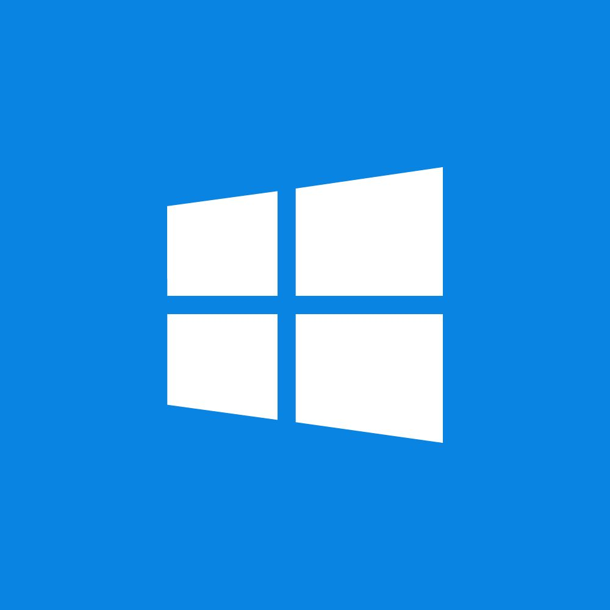

Microsoft Corporation
Windows OS is a family of operating systems developed by Microsoft.
It provides a graphical user interface (GUI) which allows users
to interact with the computer using visual elements like windows,
icons, and menus.
Windows 1.0 (1985)
Windows 2.0 (1987)
Windows 3.0 and 3.1 (1990–1992)
Windows NT 3.1 (1993)
Windows 95 (1995)
Windows 98 (1998)
Windows 2000 (2000)
Windows Me (2000)
Windows XP (2001)
Windows Vista (2007))
Windows 7 (2009)
Windows 8 (2012)
Windows 8.1 (2013)
Windows 10 (2015)
Windows 11 (2021)

APPLE INC
macOS is the operating system developed by Apple Inc. for its line of Mac computers.
Known for its sleek design, stability, and ease of use, macOS provides a graphical
user interface that allows users to interact through windows, icons, and menus.
Mac OS 8 (1997)
Mac OS 9 (1999)
macOS 10.12 Sierra (2016)
macOS 10.13 High Sierra (2017)
macOS 10.14 Mojave (2018)
macOS 10.15 Catalina (2019)
macOS 11 Big Sur (2020)
macOS 12 Monterey (2021)
macOS 13 Ventura (2022)
macOS 14 Sonoma (2023)
macOS 15 Sequoia (2024)
macOS 26 Tahoe (2025)
macOS 27 Golden Gate (2026)
Linus Torvalds
Linux is a free and open-source operating system. It acts as the bridge between your computer's hardware and the software you use
(like apps and programs). Unlike Windows or macOS, Linux is built on a kernel (the core system) created by Linus Torvalds in 1991.
Linux doesn't come as just one version. Instead, it has many distributions (distros)—these are different versions of Linux with
their own features, designs, and tools.
UBUNTU (Ubuntu 20.04, Ubuntu 22.04, Ubuntu 24.04)
DEBIAN (Debian 10, Debian 11, Debian 12)
FEDORA (Fedora 38, Fedora 39, Fedora 40)
RED HAT ENTERPRISE LINUX (RHEL 7, RHEL 8, RHEL 9)
LINUX MINT (Mint 20, Mint 21, Mint 22)
ARCH LINUX (Rolling Release - No fixed versions)